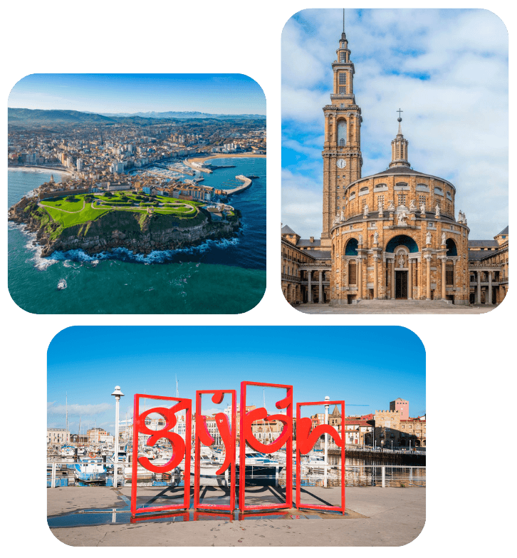
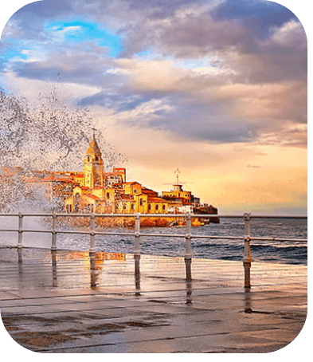
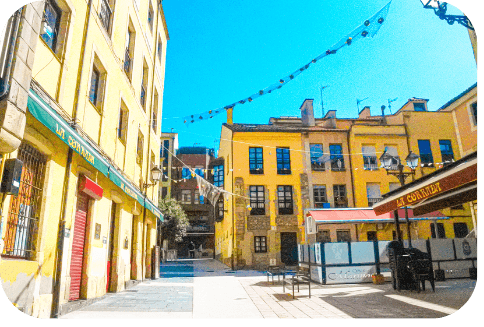
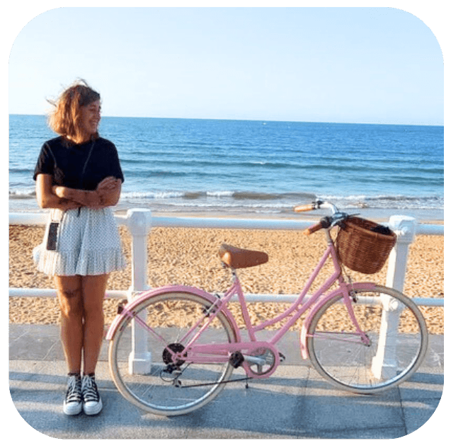

Viajes top destinos del mundo
Ver más

Bienvenidos a Gijón, ciudad asturiana bañada por las bravas aguas del mar Cantábrico y rodeada de un precioso entorno natural. Situada en el norte de España, Gijón enamora por su bonita playa urbana de San Lorenzo, el barrio antiguo de pescadores de Cimadevilla, el puerto y sus fantásticos miradores a la escarpada costa además de, por supuesto, el buen carácter de su gente y su contundente gastronomía a base de platos como el cachopo y la fabada asturiana.

Después de un paseo por la orilla de la playa de San Lorenzo puedes acercarte a Cimadevilla, el barrio más antiguo y con más encanto que ver en Gijón.Situado sobre el cerro de Santa Catalina, en un pequeña península, este barrio de estrechas y empedradas calles es perfecto para perderte entre sus rincones y edificios llenos de encanto y de historia como por ejemplo, la Plaza Mayor, la plaza del Periodista Arturo Arias (conocida popularmente como «El Lavaderu»), la Torre del Reloj, los restos de la antigua Muralla Romana, la Casa Natal de Jovellanos, la calle Atocha y la plaza de la Soledad, con su famosa Casa del Chino.Aunque la visita a todos estos lugares es imprescindible, el verdadero placer de este antiguo barrio de pescadores está en disfrutar del buen ambiente y la buena música tomando algo en alguna de las terrazas de la Cuesta del Cholo o en los locales que riegan sus callejuelas.

Gijón es una ciudad con mucho que ofrecer. Además de su oferta turística y todo su encanto, Gijón cuenta con una amplia oferta cultural durante todo el año: exposiciones, festivales de cine, música y gastronomía, festejos, etc., copan la agenda cultural gijonesa durante todo el año. Ya sea para unos días o una temporada, en Gijón y sus alrededores, lo que con cariño llamamos “la Tierrina”, es difícil aburrirse y no encontrar el plan perfecto que se adapte a ti y a los tuyos. ¿Te animas? Te esperamos con los brazos abiertos.
¡Hola! Soy Cristina. He crecido bajo el 'orbayu' de Asturias, con el salitre en la piel de sus playas, el olor a monte en la nariz y el buen sabor de su comida típica en el paladar. Furgonetera y “culo inquieto”, disfruto recorriendo sus rincones y, ahora también, compartiéndolos con vosotras.

¿Te interesan otros destinos? Echa un ojo a estos: Lucena, Sevilla, Mallorca